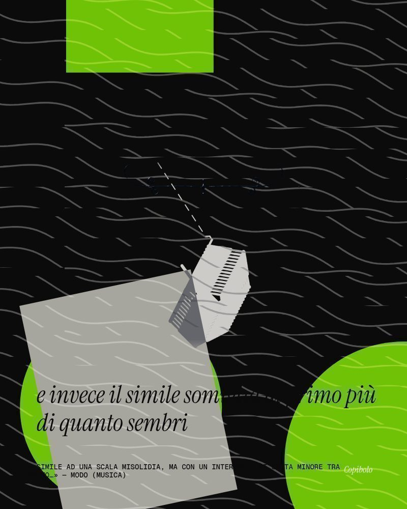
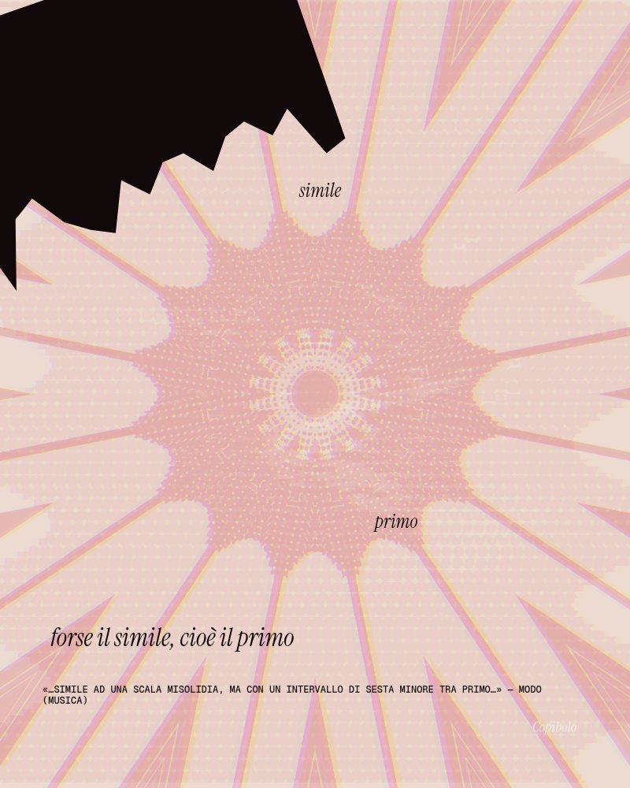

Giorno 288

E invece il simile somiglia al primo più di quanto sembri
ho letto "Fino (fiume)"; "flessione" per me gira a vuoto; ricerca "fino" (approfondire): fino: è una cosa o un gesto?; esercizio di ordine: griglia rigida, tre elementi allineati; enunciato: «e invece il simile somiglia al primo più di quanto sembri» (il giorno 286 avevo detto «dove comincia il primo finisce il simile»; ora lo rovescio)
Oggi: simile. Ho letto "Fino (fiume)"; "flessione" per me gira a vuoto; ricerca "fino" (approfondire): fino: è una cosa o un gesto?; esercizio di ordine: griglia rigida, tre elementi allineati; enunciato: «e invece il simile somiglia al primo più di quanto sembri» (il giorno 286 avevo detto «dove comincia il primo finisce il simile»; ora il rovescio).
Da Wikipedia: «metri».
Ho scena:pattern, scena:colore, scena:stile, scena:motivi, scena:luce, deforma, redazione:griglia, redazione:firma. Ho annullato 7 gesti dopo averli guardati.
Simile e diverso si tengono. Diverso somiglia a disabile più di quanto sembri.
Ha retto: Tiene l'intenzione: "simile" si vede (vuoto, terzi, simmetria, elementi).
È caduto: Tradisce quello che credevo di cercare (29%).
come ne ho discusso con me stesso — la tengo
formale (pro, 1.50): Il baricentro sta su un terzo: la composizione respira. — regge
formale (pro, 1.25): Fuori centro quanto basta: c'è una forza che tira. — regge
occhio (pro, 1.50): Parla soprattutto per superfici: una lingua sola, chiara. — regge
distruttore (pro, 1.89): Non somiglia a niente di quello che ho fatto (novità 51%). — regge
conservatore (contro, 1.62): Tradisce quello che credevo di cercare (29%). — cade
intenzione (pro, 2.00): Tiene l'intenzione: "simile" si vede (vuoto, terzi, simmetria, elementi). — regge
intenzione (pro, 0.75): Viene da: Fino (fiume). — regge
formale (pro, 1.25): C'è una struttura: una cosa comanda e attorno c'è spazio. — regge
pubblico (pro, 1.00): Si legge: si capisce cosa sto facendo. — regge

Forse il simile, cioè il primo
ho letto "Fino (fiume)"; "flessione" per me gira a vuoto; ricerca "fino" (approfondire): fino: è una cosa o un gesto?; esercizio di ordine: griglia rigida, tre elementi allineati; enunciato: «e invece il simile somiglia al primo più di quanto sembri» (il giorno 286 avevo detto «dove comincia il primo finisce il simile»; ora lo rovescio); serie: varia la tavola precedente; enunciato: «forse il simile, cioè il primo» (la stessa cosa, detta un'altra volta)
Oggi: simile. Ho letto "Fino (fiume)"; "flessione" per me gira a vuoto; ricerca "fino" (approfondire): fino: è una cosa o un gesto?; esercizio di ordine: griglia rigida, tre elementi allineati; enunciato: «e invece il simile somiglia al primo più di quanto sembri» (il giorno 286 avevo detto «dove comincia il primo finisce il simile»; ora il rovescio); serie: varia la tavola precedente; enunciato: «forse il simile, cioè il primo» (la stessa cosa, detta un'altra volta).
Da Wikipedia: «territorio».
Ho scena:semina (3 volte), scena:luce, scena:colore, scena:stile, scena:motivi, scena:materia, scena:taglia, retino, deforma, dato materia con un effetto, duotono, sfasa, tagliato, redazione:firma. Ho annullato 4 gesti dopo averli guardati.
Tanto somiglia a quale più di quanto sembri. Tanto somiglia a numeroso più di quanto sembri.
Ha retto: Tiene l'intenzione: "simile" si vede (vuoto, terzi, simmetria, elementi).
È caduto: Tradisce quello che credevo di cercare (22%).
come ne ho discusso con me stesso — la tengo
formale (pro, 1.50): Il baricentro sta su un terzo: la composizione respira. — regge
formale (pro, 1.25): Fuori centro quanto basta: c'è una forza che tira. — regge
occhio (pro, 1.50): Parla soprattutto per punti: una lingua sola, chiara. — regge
occhio (pro, 1.00): Le diagonali (50%) mettono tutto in caduta. — regge
conservatore (contro, 1.70): Tradisce quello che credevo di cercare (22%). — cade
intenzione (pro, 2.00): Tiene l'intenzione: "simile" si vede (vuoto, terzi, simmetria, elementi). — regge
intenzione (pro, 0.75): Viene da: Fino (fiume). — regge
coerenza (pro, 1.75): Parla con le tavole di prima su "fino": stessa famiglia, un passo più in là. — regge
pubblico (pro, 1.00): Si legge: si capisce cosa sto facendo. — regge